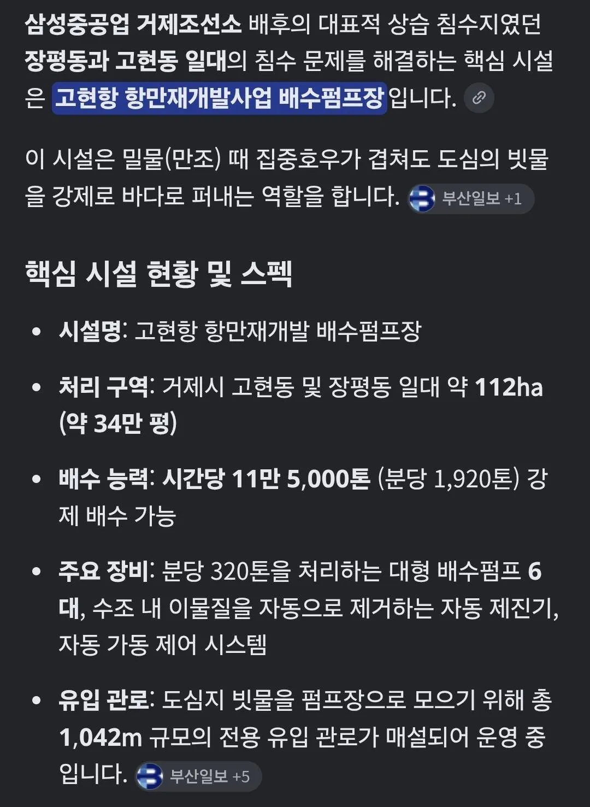
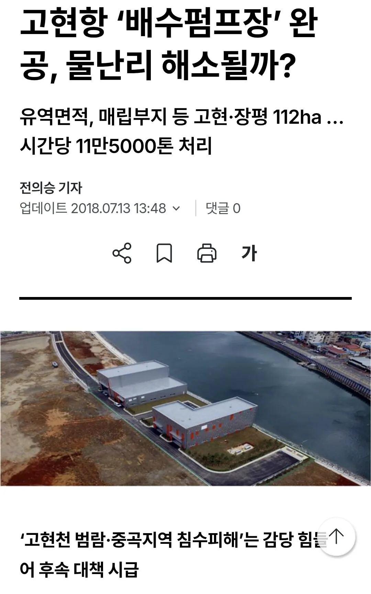
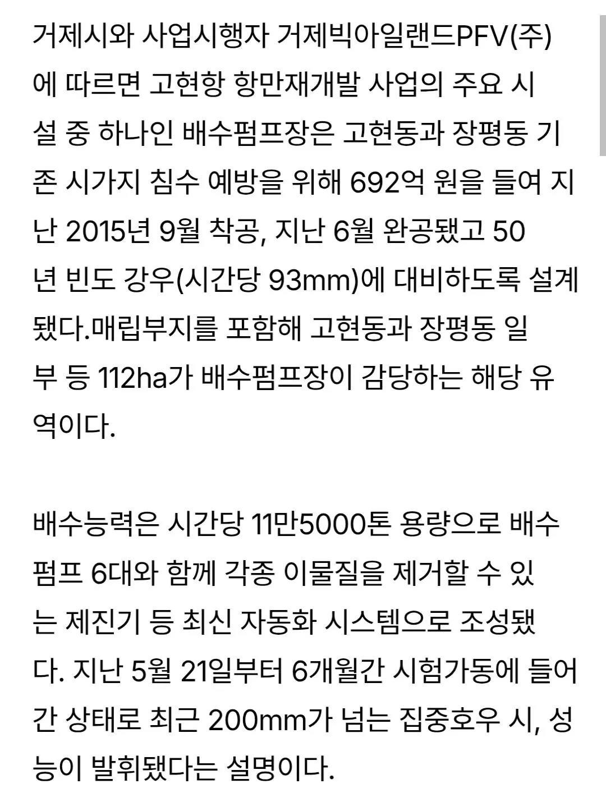
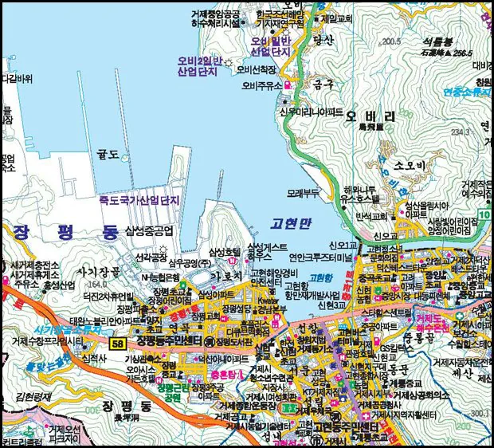
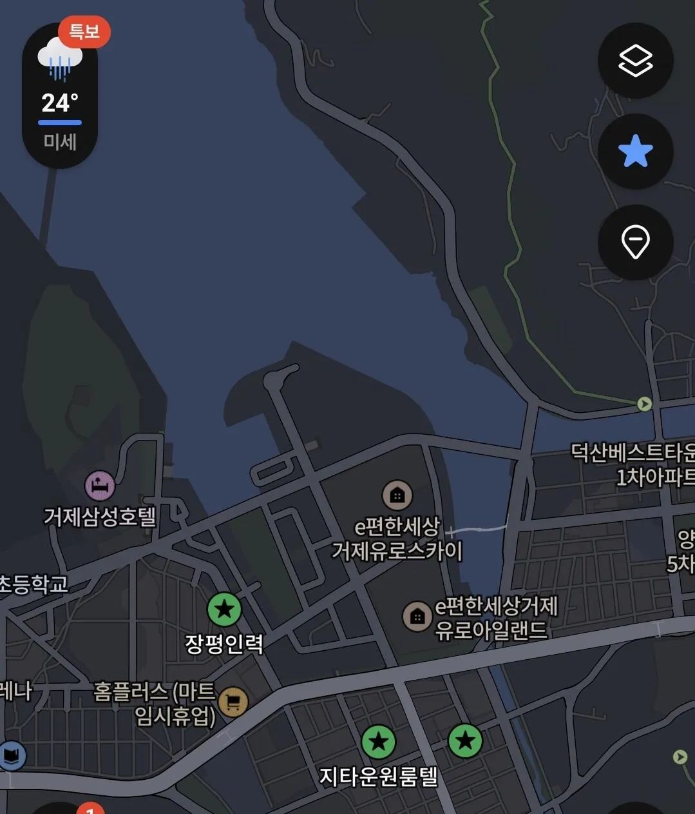
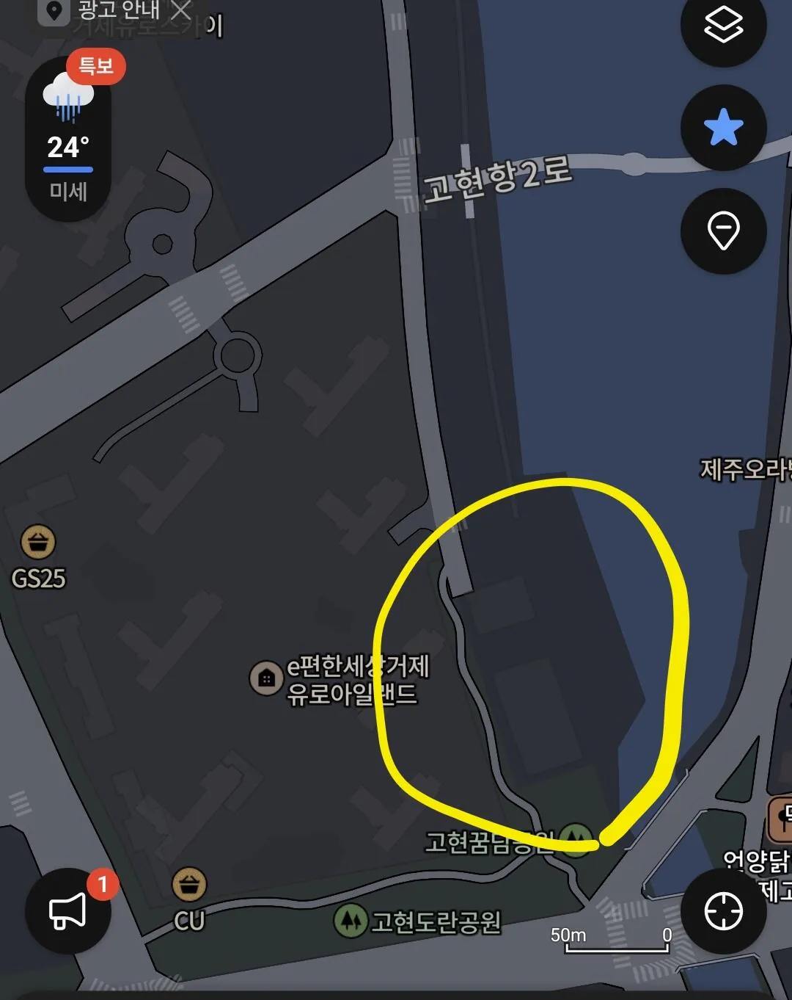

거제 삼성중공업이 있는 장평동, 그리고 바로
이어지는 거제시외버스터미널과 최대상권이 있는
고현으로 이어지는 라인은 지대가 경사져있고
매립지와 기존 지반의 높이차이로 인해
상습 침수지역이었음
(밀가루 반죽 가운데를 손바닥으로 누르면
움푹 들어가는 형태임)
리센느 원이가 거제에 백화점 있다고 했던
디큐브 백화점과 유일의 극장 CGV
그리고 영업재개로 겨우 다시 문을 연
홈플러스가 같이 있는 이 지역이 제일 저 지대라
피해가 컸음 (허리높이까지 차도와 인도가
물에 잠김)
이에 거제시는 2018년에 사진에 보이는
고현만( 실제로는 매립지가 추가 되어
지도보다 물길이 좁음)의 매립지에
고현항 항만재개발 사업의 일환으로
배수펌프장을 건설함


사진상의 노란 원 안에 있는곳이 배수펌프장임
저기에서 시간당 11만톤의 육상에 고인 물을
바다로 배수해내는 펌프장을 설치 했음
물론 그 설계예측범위를 아득히 벗어난
이번 집중호우탓에 일시적으로 거제시의
시가지들이 물에 잠기긴 했으나
정말 신속한 속도로 침수 3시간만에 거의
배수에 성공하여 도로피해 상황을 파악하고
신속하게 복구작업이 시작될 수 있었음
사업비 700억 가량으로 공사해서
진짜 이번 물 난리에 대 활약한
'고현항 배수펌프장'
캬 ㄷㄷ
댓글
수집 당시 댓글 6개
Enjor · 3 일 전
환장할 노릇입니다와 발상을 뒤집었습니다에서 만나겠군
벨즈 · 3 일 전
로보트 · 3 일 전
포항 아파트 지하주차장 참사때 경험인지 이번에 거제 소방차 펌프로만 물 빼는 게 아니라 엄청난 펌프력으로 지하주차장 물 빼는 특수 장비 있더라
착하게살기1일차 · 3 일 전
그거 물빼는 용이 아니라 불 끄는 용임..
로보트 · 3 일 전
인생무상이요 · 3 일 전
고현항씨 대단하네 진짜